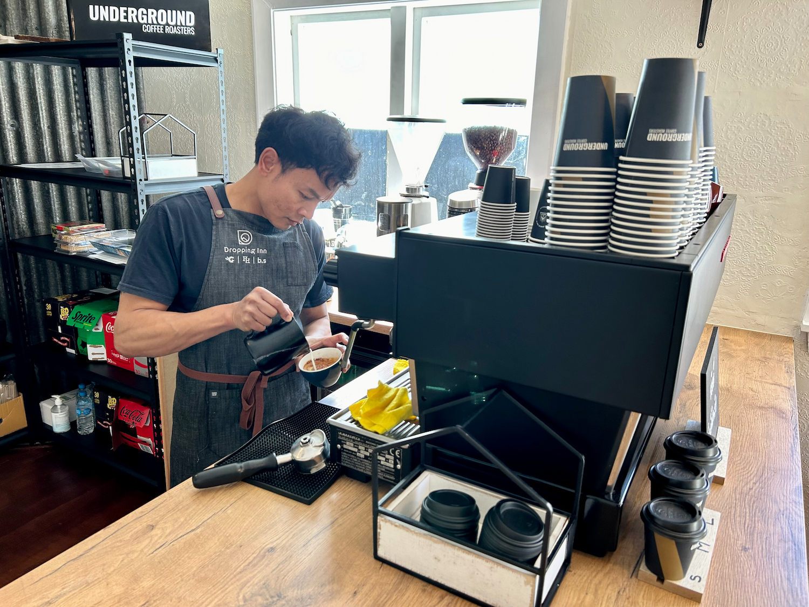
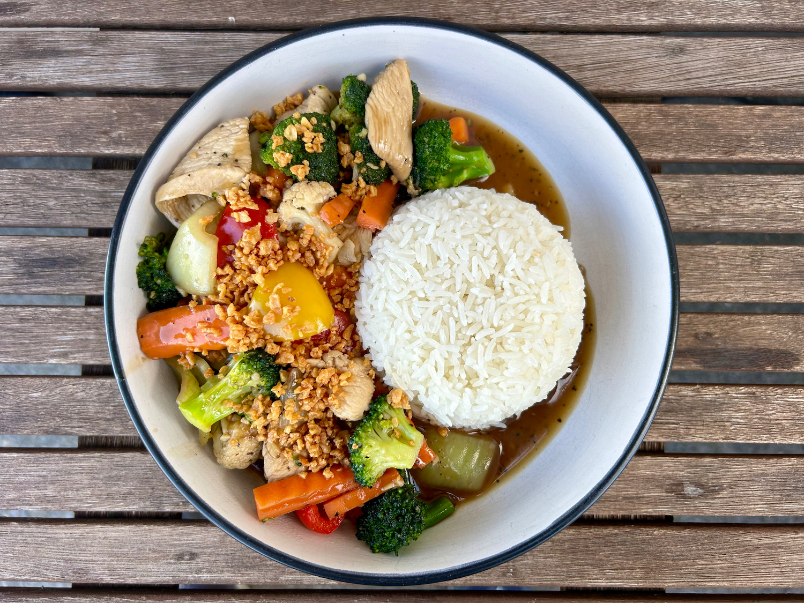
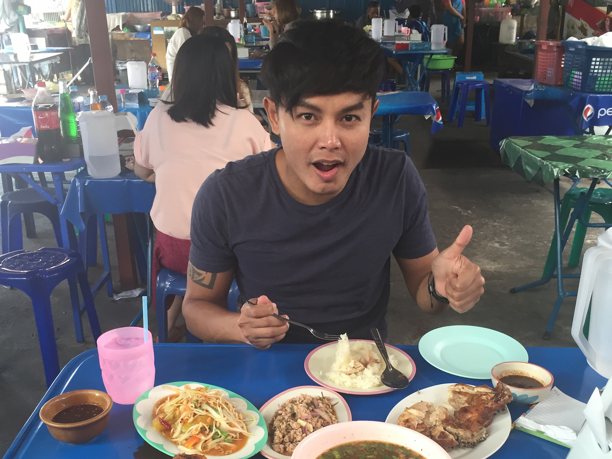
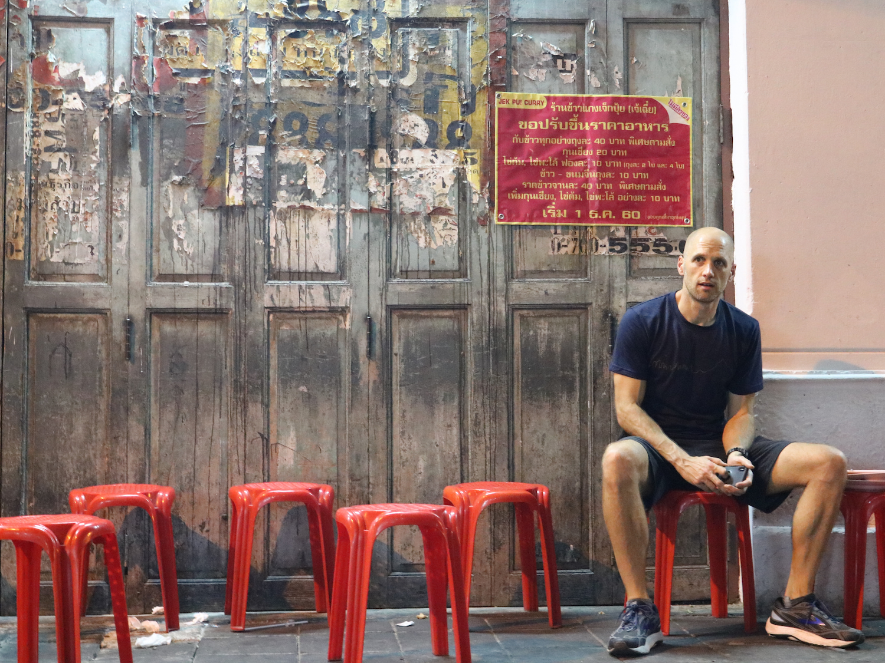

ส้มตำ
Crafted coffee and Thai street food nestled in the alpine village of Hanmer Springs; a little slice of Thailand in New Zealand’s Southern Alps.
Coffee
Som Tam was started in 2024 by Kiwis, Gun and Andrew, through their
joint passion for coffee and Thai food. Gun hails from Buriram in
the Isaan region of Thailand. He has been working as a barista and
in Thai restaurants in Queenstown, Wanaka and Perth for the past
decade.

Andrew is a scientist, originally from Sheffield in the UK. He has
spent the past 20-years conducting science research in mathematics,
space radar and oceanography from New Zealand, Thailand and
Australia. He’s still not really sure how he’s ended up working in a
Thai cafe in Hanmer Springs.
thai

Som Tam was started in 2024 by Kiwis, Gun and Andrew, through their
joint passion for thai and Thai food. Gun hails from Buriram in
the Isaan region of Thailand. He has been working as a barista and
in Thai restaurants in Queenstown, Wanaka and Perth for the past
decade.

Andrew is a scientist, originally from Sheffield in the UK. He has
spent the past 20-years conducting science research in mathematics,
space radar and oceanography from New Zealand, Thailand and
Australia. He’s still not really sure how he’s ended up working in a
Thai cafe in Hanmer Springs.
Specials
วันจันทร์
MONDAY GANG
$20 Thai gang/curry served with steamed jasmine rice. See our Facebook page for this week's curry dish.
วันพฤหัสบดี
THURSDAY COMBO
$35 Combo. Choose any starter, main & drink from our evening menu. Save up to 30%.
วันอาทิตย์
SUNDAY STIR-FRY
$20 Thai stir-fry served with steamed jasmine rice. See our Facebook page for this week's stir-fry dish.
About

Som Tam was started in 2024 by Kiwis, Gun and Andrew, through their
joint passion for coffee and Thai food. Gun hails from Buriram in
the Isaan region of Thailand. He has been working as a barista and
in Thai restaurants in Queenstown, Wanaka and Perth for the past
decade.

Andrew is a scientist, originally from Sheffield in the UK. He has
spent the past 20-years conducting science research in mathematics,
space radar and oceanography from New Zealand, Thailand and
Australia. He’s still not really sure how he’s ended up working in a
Thai cafe in Hanmer Springs.
Our name, Som Tam, is the most famous dish from Gun’s home in the
Issan region of Thailand, where Gun is from. It’s the ultimate Isaan
comfort food - the Thai equivalent of a Kiwi pie or fish & chips,
but a bit (lot) more spicy.
Contact
For any enquiries please call
Be the first to hear about our latest updates and promotions by
following us on